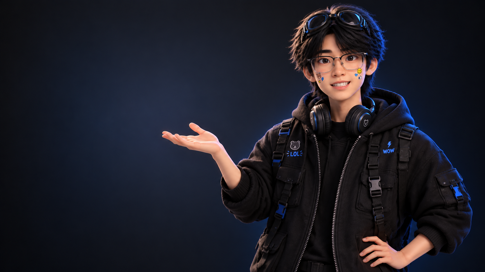

想象有形，体验有感
让想法，成为看得见的体验
探索视觉表达与 产品体验的更多可能。
启用 JavaScript 后可体验人物追视；当前展示视频正面帧。

02BIOGRAPHY / 个人履历
天才艺术家
你好，我是李瑞。
在 UI、品牌视觉与 IP 设计之间探索，把好奇变成尝试，把想法做成作品。
01 / 个人介绍
想法不止于想象。
我是李瑞，一名即将走出校园的设计探索者。把好奇变成尝试，把想法做成作品。
2027
02 / 教育经历
山东理工大学
数字媒体技术2027 届应届毕业生
03 / 设计探索
UI 设计
品牌视觉
IP 设计
在视觉表达与产品体验之间，持续探索，动手实践。